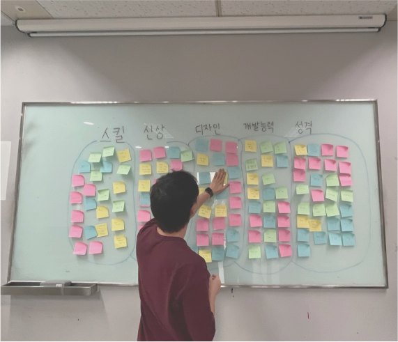
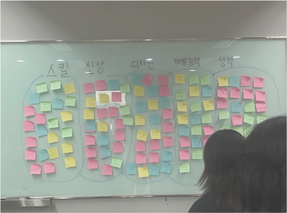
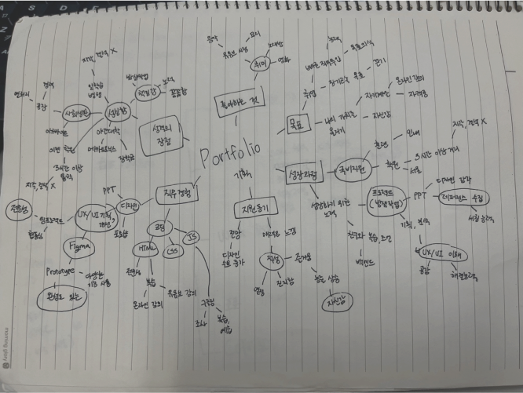

- STRONG POINT 아이콘과 포인트 컬러를 사용해 가독성을 올림
- STRONG POINT 화면 곳곳에 고정 요소를 배치해 재미를 줬음
- STRONG POINT 요소들이 화면에 꽉 차지만 깔끔한 UI
- WEAKNESS 폰트와 컬러를 일관적으로 가서 지루할 수 있음
Brainstorming
& Mind Map
브레인스토밍과 마인드맵입니다.
브레인스토밍은 다양한 아이디어를 도출하고 핵심 컨셉을 형성하는 데 도움을 주며,
마인드맵은 아이디어를 구조화하고 시각적으로 표현하여 사용자로 하여금
전체 구조를 파악하는데 도움을 줍니다
프로젝트 초기 단계에서 아이디어를 생성하고 정리하는 핵심 단계입니다.
-

BRAINSTORMING
핵심 컨셉을 도출하기 위한 아이디어 정리 및 선별 과정을 거칩니다.
포트폴리오에 어떻게 적용시키고 어떤 식으로 시각적 표현을 할 것인지 고민했습니다. -

BRAINSTORMING
규칙없이 다양한 아이디어를 떠올리고 공유하는 과정입니다.
브레인스토밍은 같은 수업의 수강생 3명과 함께 진행하였습니다. -

BRAINSTORMING
아이디어를 확장하고 연결하는 과정입니다.
이렇게 만들어진 아이디어 중에서 중요한 것들을 정리하고 선별한 뒤,
핵심 컨셉을 도출합니다.